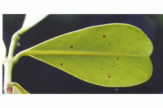
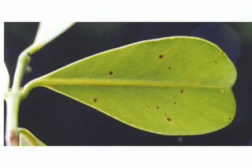

Trees up to 35 m tall.
35ಮೀ ಎತ್ತರದವರೆಗೆ ಬೆಳೆಯುವ ಮರಗಳು.
35 മീറ്റര് വരെ ഉയരത്തില് വളരുന്ന മരങ്ങള്.
மரம் 30 மீ. வரை வளரக்கூடியது.
Outer bark pale brown to yellowish, with strong boat shape fissures; inner bark reddish.
ಹೊರ ತೊಗಟೆ ಮಂದವಾದ ಹಳದಿ ಬಣ್ಣದಲ್ಲಿದ್ದು ಬಲಿಷ್ಠವಾದ ದೋಣಿಯಾಕಾರದ ಸೀಳಿಕೆಗಳನ್ನು ಹೊಂದಿರುತ್ತದೆ; ಒಳತೊಗಟೆ ಕೆಂಪು.
തോണിയുടെ ആകൃതിയുള്ള, കനത്ത വിള്ളലുകളോടുകൂടിയ പുറംതൊലിക്ക് തവിട്ടുനിറം തൊട്ട് മഞ്ഞനിറം വരെ ആണ്; അകംതൊലിക്ക് ചുവപ്പ്നിറം.
மரத்தின் வெளிப்புறப்பட்டை வெளிறிய ப்ரவுன் முதல் மஞ்சள் நிறமானவை, நன்கு படகு போன்ற பிளவுகளுடையது; உள்பட்டை சிவப்பானது.
Branchlets quadrangular, drying dark brown.
ಕಿರುಕೊಂಬೆಗಳು ನಾಲ್ಕು ಕೋನಗಳನ್ನು ಹೊಂದಿರುತ್ತವೆ ಹಾಗೂ ಒಣಗಿದಾಗ ಕಡುಕಂದು ಬಣ್ಣದಲ್ಲಿರುತ್ತವೆ.
ഉണങ്ങുമ്പോള് കടും തവിട്ടുനിറമാകുന്ന ഉപശാഖകള് ചതുഷ്കോണോടുകൂടിയതാണ്.
சிறிய நுனிக்கிளைகள் குறுக்குவெட்டுத் தோற்றத்தில் நான்கு கோணங்களுடையது, உலரும் போது கருத்த ப்ரவுன் நிறமடைகிறது.
Latex clear.
ಸಸ್ಯ ಸ್ವಚ್ಛವಾಗಿರುತ್ತದೆ.
നിറമൊന്നും ഇല്ലാത്ത സ്രവം.
பால் தெளிவான வெளிறிய நிறமானது.
Simple, opposite, decussate; petiole 0.3-0.8 cm long, canaliculate, glabrous; lamina 2.5-6 (-8) x 1-4 cm, obovate, apex usually rounded or obtuse, sometimes subacuminate, base cuneate, coriaceous, glabrous, glossy above; midrib flat or slightly raised above; secondary_nerves close, parallel, more acute in angle and terminating at thick margin.
ಎಲೆಗಳು ಸರಳವಾಗಿದ್ದು,ಕತ್ತರಿಯಾಕಾರದ ಅಭಿಮುಖ ಜೋಡನಾ ವ್ಯವಸ್ಥೆ,ಯಲ್ಲಿದ್ದು 0.3 ರಿಂದ 0.5 ಸೆಂ.ಮೀ. ಉದ್ದದ ಕಾಲುವೆಗೆರೆ ಸಮೇತವಾಗಿರುವ ಎಲೆತೊಟ್ಟುಗಳನ್ನು ಹೊಂದಿರುತ್ತವೆ; ಎಲೆಪತ್ರಗಳು 2.5 -6 (-8) X 1 - 4 ಸೆಂ.ಮೀ ಗಾತ್ರ ಹೊಂದಿದ್ದು, ಬುಗುರಿಯಾಕಾರದಲ್ಲಿರುತ್ತದೆ; ಸಾಮಾನ್ಯವಾಗಿ ಎಲೆ ತುದಿ ದುಂಡಾದ ಅಥವಾ ಚೂಪಲ್ಲದ ಮಾದರಿಯಲ್ಲಿರುತ್ತವೆ,ಕೆಲವು ವೇಳೆ ಉಪ-ಕ್ರಮೇಣವಾಗಿ ಚೂಪಾಗುವ ಮಾದರಿಯದ್ದಾಗಿರುತ್ತದೆ, ಎಲೆಯ ಬುಡ ಬೆಣೆಯಾಕಾರದಲ್ಲಿರುತ್ತದೆ, ಎಲೆಗಳು ತೊಗಲನ್ನೋಲುವ ಮಾದರಿಯಲ್ಲಿದ್ದು, ಹೊಳಪಾದ ಮೇಲ್ಭಾಗವನ್ನು ಹೊಂದಿದ್ದು ರೋಮರಹಿತವಾಗಿರುತ್ತವೆ; ಮಧ್ಯನಾಳ ಚಪ್ಪಟೆ ಅಥವಾ ಪತ್ರದ ಮೇಲ್ಭಾಗದಲ್ಲಿ ತುಸು ಉಬ್ಬಿಕೊಂಡಿರುತ್ತದೆ ; ಎರಡನೇ ದರ್ಜೆಯ ನಾಳಗಳು ಕಡಿಮೆ ಅಂತರದಲ್ಲಿದ್ದು ಸಮಾಂತರದಲ್ಲಿರುತ್ತವೆ ಹಾಗೂ ತೀಕ್ಷ್ಣವಾದ ಕೋನವನ್ನು ಹೊಂದಿದ್ದು ಎಲೆಯ ದಪ್ಪವಾದ ಅಂಚಿನಲ್ಲಿ ಕೊನೆಗೊಳ್ಳುತ್ತವೆ;
സമ്മുഖ ഡെക്കുസേറ്റ് ക്രമത്തിലുള്ള ലഘുപത്രങ്ങള്; ഇലഞെട്ടിന് 0.3 സെ.മി മുതല് 0.8 സെ.മി. വരെ നീളം, ചലോടുകൂടിയതും അരോമിലവുമാണ്; പത്രഫലകത്തിന് 2.5 സെ.മി മുതല് 6 സെ.മി വരെ (ചിലപ്പോള് 8 സെ.മി) നീളവും, 1 സെ.മി മുതല് 4 സെ.മി വരെ വീതിയും, അപഅണ്ഡാകാരവും പത്രാഗ്രം സാധാരണയായി വൃത്താകാരത്തിലോ ഉപകോണാകാരമോ ആണ്, ചിലപ്പോള് ചെറു വാലോടുകൂടിയത്, പത്രാധാരം അപ്പാകൃതിയില് ചര്മ്മില പ്രകൃതം, മുകള്ഭാഗം തിളങ്ങുന്നതാണ്; പരന്നതോ, മുകള്ഭാഗത്ത് ചെറുതായി ഉയര്ന്നതോ ആയ മുഖ്യസിര; വളരെ അടുത്തതും സമാന്തരമായി പോയി, കൂടിയ നിശിതകോണില് കട്ടിയേറിയ അരികില് അവസാനിക്കുന്നതുമായ ദ്വിതിയ ഞരമ്പുകള്.
இலைகள் தனித்தவை, எதிரடுக்கமானவை, குறுக்குமறுக்கமானவை; இலைக்காம்பு 0.3-0.8 செ.மீ. நீளமானது, இலைக்காம்பு குறுக்குவெட்டுத் தோற்றத்தில் கேனாலிகுலேட், உரோமங்களற்றது; இலை அலகு 2.5-6(-8) X 1-4 செ.மீ., தலைகீழ் முட்டை வடிவானது, அலகின் நுனி பொதுவாக வட்டமானது அல்லது மழுங்கலானது, சிலசமயங்களில் அதிக்கூரியது, அலகின் தளம் ஆப்பு வடிவம், கோரியேசியஸ், கீழ்பரப்பு உரோமங்களற்றது, மேற்பரப்பு பளபளப்பானது; மையநரம்பு அலகின் மேற்பரப்பிற்கு சமமானது அல்லது சிறிது மேல் எழும்பியது, இரண்டாம் நிலை நரம்புகள் நெருக்கமானவை, இணையானவை (பேரலல்), குறுகிய கோணமுடையது மற்றும் தடித்த விளிம்பின் இறுதி வரை செல்பவை.
Flowers white, in axillary racemes.
ಹೂಗಳು ಶ್ವೇತ ವರ್ಣ ಹೊಂದಿದ್ದು ಅಕ್ಷಾಕಂಕುಲೀನಲ್ಲಿರುವ ಮಧ್ಯಾಭಿಸರ ಪುಷ್ಪಮಂಜರಿಯಲ್ಲಿರುತ್ತವೆ.
വെളുത്ത പൂക്കള് കക്ഷീയ പാനിക്കിള് പൂങ്കുലകളില് ഉാകുന്നു.
மலர்கள் வெள்ளை நிறமானவை, இலைக்கோணங்களில் காணப்படும் பேனிக்கிள்.
Drupe, ovoid, apiculate 3.5 cm long; 1-seeded.
ಡ್ರೂಪ್ ಗಳು ಅಂಡಾಕಾರದಲ್ಲಿದ್ದು, ಅಗ್ರ ಭಾಗದಲ್ಲಿ ಸೂಕ್ಷ್ಮವಾದ ಮುಳ್ಳನ್ನು ಹೊಂದಿದ್ದು, 3.5 ಸೆಂ ಮೀ ಉದ್ದವಿದ್ದು ಒಂದು ಬೀಜವನ್ನೊಳಗೊಂಡಿರುತ್ತವೆ.
കായ 3.5 സെ.മി നീളമുള്ളതും, അറ്റത്തൊരു മുനപ്പോടുകൂടിയതുമായ അണ്ഡാകാര ആമ്രകമാണ്; ഒറ്റവിത്തുമാത്രം.
உள்ளோட்டுத்தசைகனி (ட்ரூப்), முட்டை வடிவானது, நுனி அலகுடையது, 3.5 செ.மீ. நீளமானது, ஒர் விதையுடையது.
 
